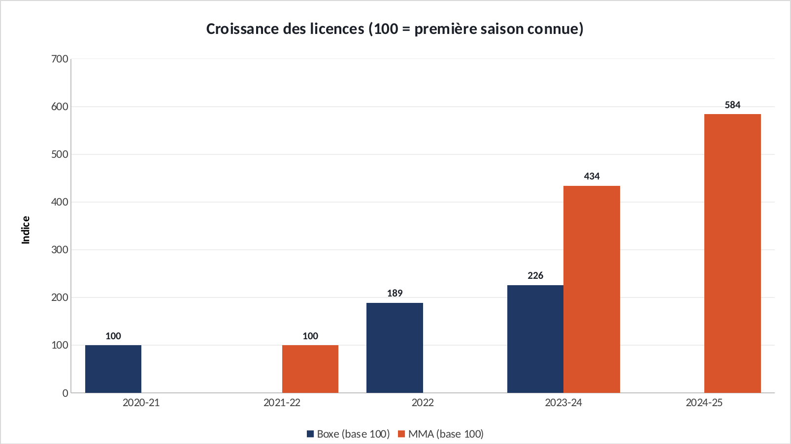
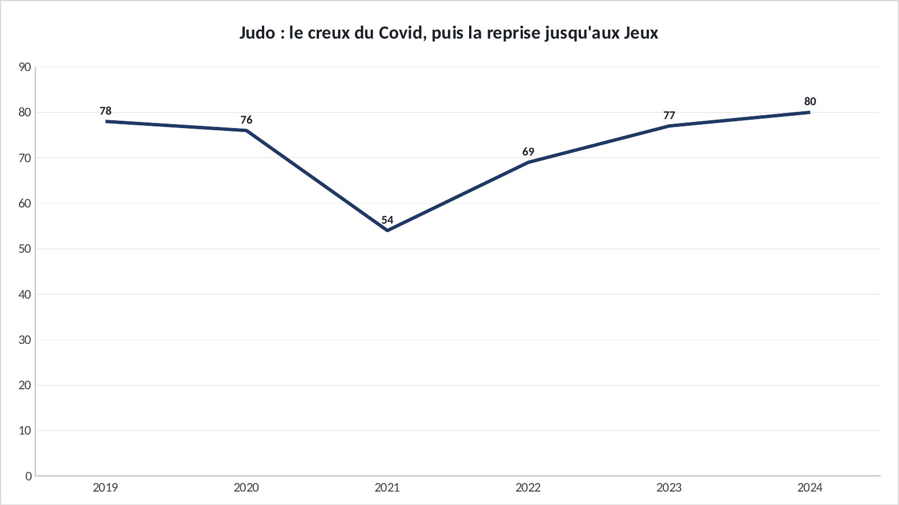

Étude · Sports de combat × marketing
MMA, boxe, judo : comment les sports de combat ont conquis la France.
Depuis 2020, les sports de combat attirent plus de monde que jamais en France. Mais ils ne grandissent pas tous pour les mêmes raisons. J'ai rassemblé les chiffres de licences et d'affluence pour repérer les pics, puis comparé les stratégies des organisateurs.
En 30 secondes
- Le MMA compte 60 fois moins de licenciés que le judo, mais il remplit l'Accor Arena. Sa croissance passe d'abord par le spectacle, pas par les clubs.
- Il y a deux sortes de hausse : les pics liés à un événement (le creux du Covid, puis l'effet des Jeux pour le judo), qui retombent, et une croissance de fond, celle du MMA, qui continue.
- Chaque organisateur joue une carte différente : l'UFC mise sur un rendez-vous fixe et des héros français, la PFL sur une star et sa communauté, Ares sur la proximité.
01 · La tailleUn petit sport qui fait beaucoup de bruit

Sources : Insee (judo, karaté, kick-boxing, 2024) · FFBoxe (2024) · FFSavate (2023-24) · IMMAF (MMA, 2023-24)
En nombre de licenciés, le judo écrase tout : 547 700. Le MMA, lui, en compte 8 922. Pourtant, c'est lui qui remplit les plus grandes salles de Paris. Ce décalage est le point de départ de l'étude : si l'on ne regarde que les licences, on passe à côté de ce qui se joue vraiment. Pour le MMA, la pratique en club et le public sont deux marchés différents.
02 · La croissanceLe MMA grandit deux fois plus vite que la boxe

Sources : FFBoxe, Insee, IMMAF, Les Pharaons · base 100 = première saison connue de chaque discipline
Pour comparer deux sports de tailles si différentes, je ramène chacun à 100 lors de sa première saison connue. La boxe passe de 26 506 licenciés (2020-21, saison Covid) à plus de 60 000 en 2024 : elle fait ×2,3. Le MMA passe de 2 056 à 8 922 en deux saisons, ×4,3, et approche 12 000 en 2024-25 selon la presse spécialisée. Ce dernier chiffre est un ordre de grandeur, pas une donnée officielle.
03 · Les picsUn événement crée un pic, pas une tendance

Source : Insee, licences de judo pour 10 000 habitants
Le judo montre bien la différence. Le Covid fait chuter les licences à 54 pour 10 000 habitants en 2021, puis elles remontent jusqu'à 80 en 2024. Les Jeux de Paris ajoutent encore +8,4 % en 2025, mais un rapport de comité fait état d'une baisse d'environ 5 % en 2026. L'effet d'un événement retombe. Le MMA, lui, n'a pas eu de Jeux : sa hausse s'appuie sur des soirées qui reviennent chaque année.
- Début 2020Le MMA devient légalLe ministère confie sa gestion à la Fédération française de boxe.
- Sept. 2022Premier UFC Paris15 405 spectateurs, 3,4 M€ de billetterie, un record pour la salle selon l'UFC.
- 2023-24Les licences de MMA doublentet la boxe passe la barre des 60 000 licenciés.
- 2024La PFL change de sallede 6 000 places au Zénith à 15 000 à l'Accor Arena, vendues très vite.
04 · Le marketingTrois stratégies, trois façons de remplir une salle
Côté fédérations, la boxe lance une licence en ligne en 2023-24 pour simplifier l'inscription, et le MMA obtient sa propre structure, la FMMAF, toujours rattachée à la boxe. Le judo, lui, profite surtout de l'exposition des Jeux.
05 · Et alors ?Ce que ça m'apprend sur le marketing
06 · LimitesCe que cette étude ne dit pas
SourcesOù j'ai trouvé les chiffres
- Insee, licences sportives par fédération (2024) et série judo pour 10 000 habitants
- Insee Première n° 1992, licences des fédérations olympiques
- FFBoxe, 60 000 licenciés · Sportmag
- IMMAF, croissance de la FMMAF · Les Pharaons
- Sportmag, savate boxe française
- UFC, bilan du premier UFC Paris · Ozap, droits RMC Sport
- Sortiraparis, PFL Paris · PFL, contrat de Cédric Doumbè
- SportBusiness, Canal+ et Ares · NR Magazine, Ares à Bordeaux
- IMMAF, légalisation du MMA en France